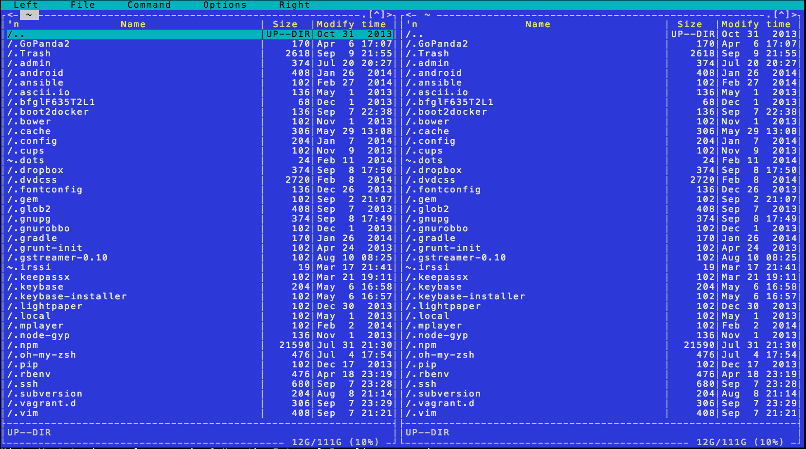
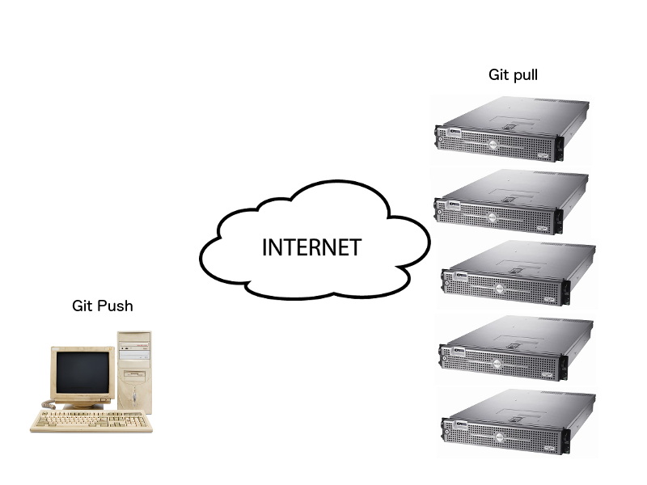

Über mich
- Angefangen mit PHP, Perl und Bash in einer Werbeagentur (SEO)
- Entwicklung von Webandwendungen mit Ruby on Rails
- Softwareentwickler bei AKRA GmbH
- Organizator des Docker Hamburg Meetups
Agenda
- Der Ist-Zustand
- Das Problem
- Eine mögliche Lösung
Mein erstes Deployment

ClusterSSH / Capistrano

Versionskontrolle V2
- Ruby
- NodeJS
- LibXML
- wkhtmltopdf
- ImageMagick
- C-Extensions
Versionskontrolle V3
- Application Servers (Passenger/Unicorn...)
- Session storage (Redis)
- Message Bus (RabbitMQ)
- Workers
- Queue (Resque/Sidekiq)
Kompatibiltät
Develper: "It works on my machine, just not on the server."
CTO: "Ok, backup your mail. We're putting your laptop into production."
Der Ist-Zustand
- Grosse Anzahl an Diensten die laufen müssen
- Inkompabilität (development, testing, staging, production)
- Manche Dienste sind abhängig voneinander
- Konfigurationsänderungen / Upgrades sind problematisch
Pretty Code
function linkify( selector ) {
if( supports3DTransforms ) {
var nodes = document.querySelectorAll( selector );
for( var i = 0, len = nodes.length; i < len; i++ ) {
var node = nodes[i];
if( !node.className ) {
node.className += ' roll';
}
}
}
}
Courtesy of highlight.js.
Intergalactic Interconnections
You can link between slides internally,
like this.
THE END
BY Hakim El Hattab / hakim.se